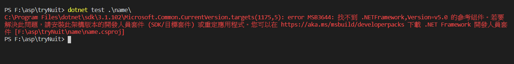
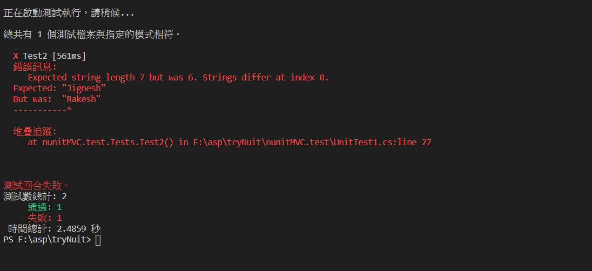
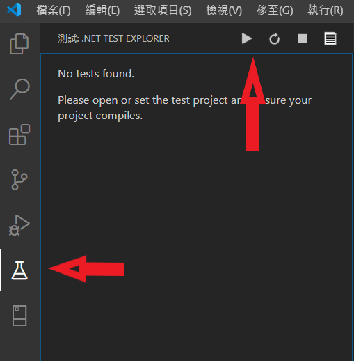
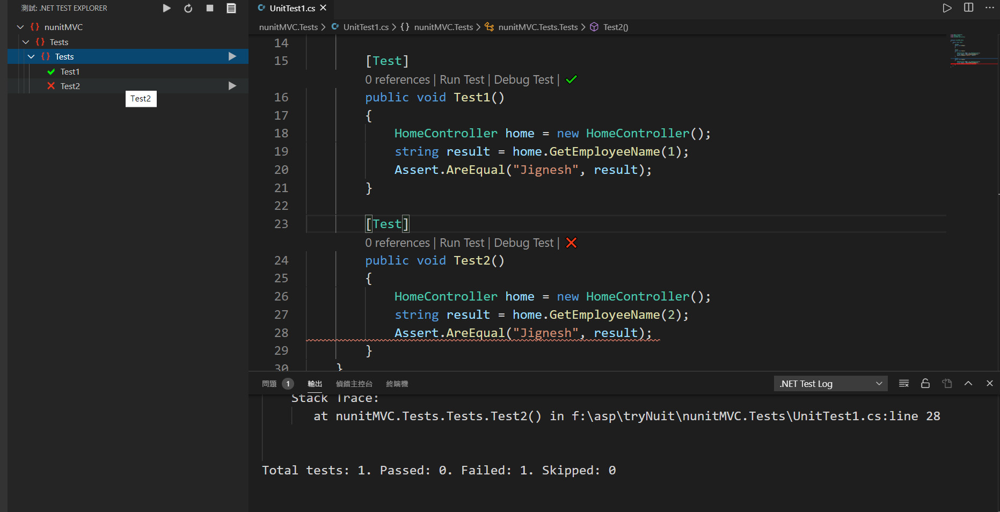

最近在開始在練習 可測試的程式碼，於是就上網查看適用 c#的方式
目前採用的是 nunit
開始 建立專案及測試資料夾 1 2 3 4 5 6 7 8 9 dotnet new mvc -n nunitMVC -- 專案資料夾 dotnet new nunit -n nunitMVC.test -- 專案測試資料夾 cd nunitMVC -- 移動到專案底下 -- 安裝NUnit dotnet add package NUnit --version 3.12.0 cd .. -- 回上層
建立完成後，我就下指令dotnet test nunitMVC.test 來測試，結果出現這個錯誤。

因為我使用 vscode 來開發，比對一下 nunitMVC.csproj 及nunitMVC.test.csproj 兩個檔案
nunitMVC.csproj
1 2 3 4 5 6 7 8 9 10 <Project Sdk="Microsoft.NET.Sdk.Web" > <PropertyGroup> <TargetFramework>netcoreapp3.1 </TargetFramework> </PropertyGroup> <ItemGroup> <PackageReference Include="NUnit" Version="3.12.0" /> </ItemGroup> </Project>
nunitMVC.test.csproj
1 2 3 4 5 6 7 8 9 10 11 12 13 14 15 16 17 18 19 <Project Sdk="Microsoft.NET.Sdk" > <PropertyGroup> <TargetFramework>netcoreapp3.1 </TargetFramework> <IsPackable>false </IsPackable> </PropertyGroup> <ItemGroup> <PackageReference Include="NUnit" Version="3.12.0" /> <PackageReference Include="NUnit3TestAdapter" Version="3.16.1" /> <PackageReference Include="Microsoft.NET.Test.Sdk" Version="16.5.0" /> </ItemGroup> </Project>
1 2 # dotnet add <專案名稱>(測試) reference <被參考專案的 csproj 檔>(開發) dotnet add nunitMVC.test reference nunitMVC\nunitMVC.csproj
開始執行測試
1 2 3 4 5 6 7 8 9 10 11 12 13 14 15 16 17 18 19 20 21 22 23 24 25 26 27 28 29 30 31 32 33 34 35 36 37 38 39 40 41 42 43 44 45 46 47 48 49 50 51 52 53 54 55 using System;using System.Collections.Generic;using System.Diagnostics;using System.Linq;using System.Threading.Tasks;using Microsoft.AspNetCore.Mvc;using Microsoft.Extensions.Logging;using nunitMVC.Models;namespace nunitMVC.Controllers { public class HomeController : Controller { private readonly ILogger<HomeController> _logger; public HomeController ( } public IActionResult Index ( return View(); } public IActionResult Privacy ( return View(); } [ResponseCache(Duration = 0, Location = ResponseCacheLocation.None, NoStore = true) ] public IActionResult Error ( return View(new ErrorViewModel { RequestId = Activity.Current?.Id ?? HttpContext.TraceIdentifier }); } public string GetEmployeeName (int empId string name; if (empId == 1 ) { name = "Jignesh" ; } else if (empId == 2 ) { name = "Rakesh" ; } else { name = "Not Found" ; } return name; } } }
nunitMVC.test\UnitTest1.cs
1 2 3 4 5 6 7 8 9 10 11 12 13 14 15 16 17 18 19 20 21 22 23 24 25 26 27 28 29 30 using NUnit.Framework;using nunitMVC.Controllers;namespace nunitMVC.test { public class Tests { [SetUp ] public void Setup ( } [Test ] public void Test1 ( HomeController home = new HomeController(); string result = home.GetEmployeeName(1 ); Assert.AreEqual("Jignesh" , result); } [Test ] public void Test2 ( HomeController home = new HomeController(); string result = home.GetEmployeeName(2 ); Assert.AreEqual("Jignesh" , result); } } }
結果

加入 NSubstitute 目前尚未研究 Mock Framework，但 John Wu 大大有加入，我也嘗試加入。
dotnet add MyWebsite.Tests package NSubstitute
安裝 .NET Core Test Explorer 安裝完成後，到資料底下
.vscode/settings.json
1 2 3 { "dotnet-test-explorer.testProjectPath" : "nunitMVC.Tests" }
我想說會自動載入測試的 class及 function，後來才發現要自己按。
＊ 不知道哪邊出錯，要再研究才行

結果

參考資料 ASP.NET Core 2 系列 - 單元測試 (NUnit)
Unit Test In .NET Core Application Using MSTest